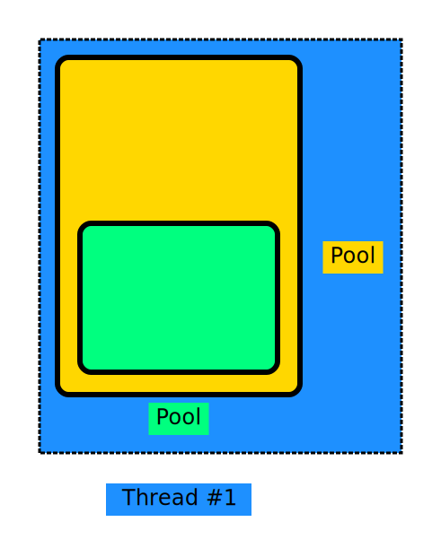
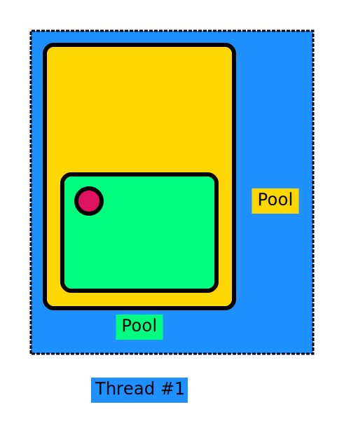
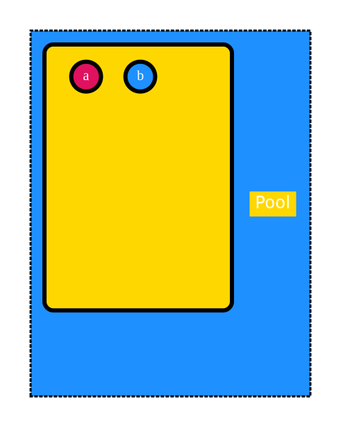
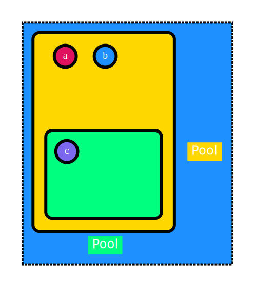
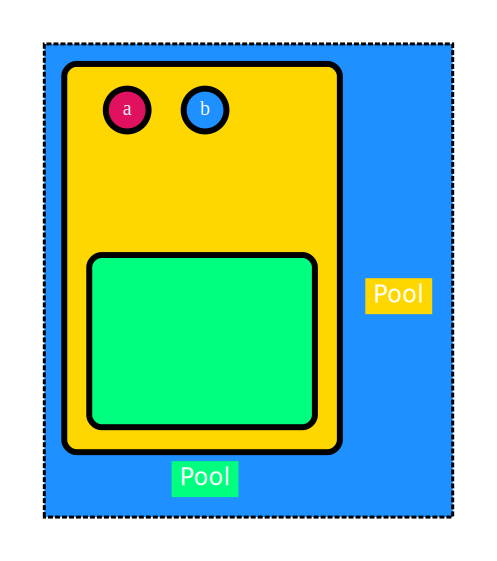
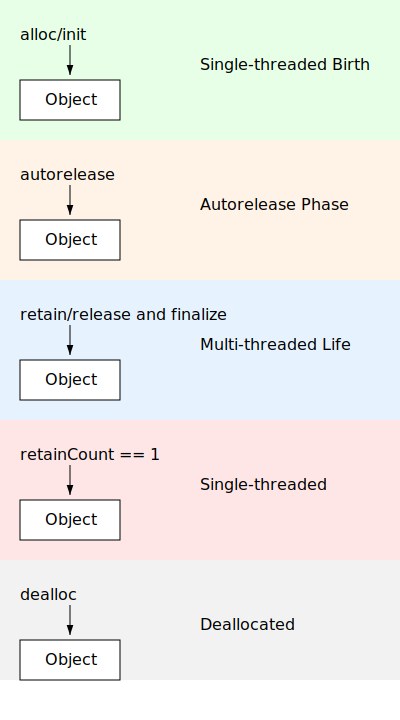
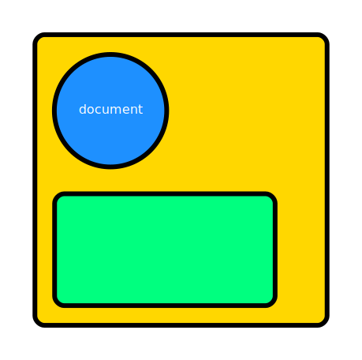
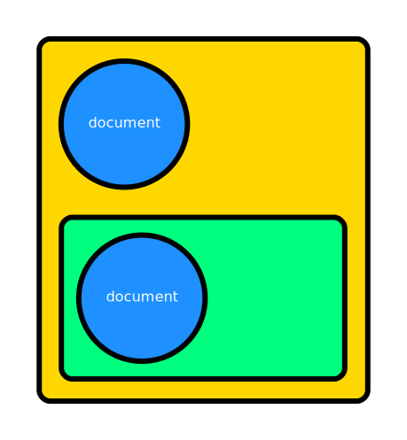
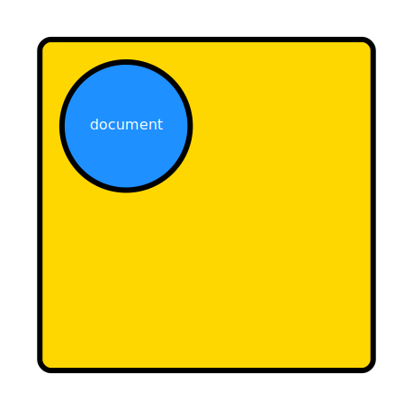
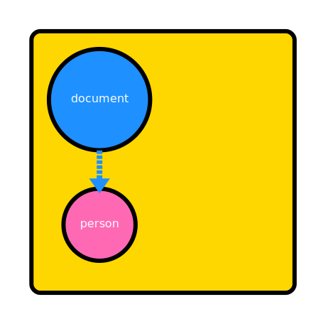

Intro
This guide is all about the proper management of objects, how they are created how they are destroyed and all things inbetween. Your mulle-objc coding will be much more fruitful after you have read this guide. The absolute minimum to take out of this guide is the AAO chapter. The rest of the guide will serve to deepen your understanding of the mulle-objc runtime. For even more information visit The Objective-C runtime in pictures or the developer guide De Re mulle-objc.
NSObject
NSObject serves as the primary root class in mulle-objc, implementing a
sophisticated object model that forms the bedrock of the entire framework. It
defines a universal interface for how objects interact with the runtime system
and with each other, encompassing crucial aspects such as message passing,
memory management, and type information handling.
Virtually every class you’ll work with in mulle-objc
will be a subclass of NSObject. In fact, only a handful of highly specialized
classes deviate from this norm, to the extent that you can safely assume any
object you’re dealing with in your day to day code is an NSObject descendant.
NSObject in more detail
Let’s break down the core mechanisms that NSObject provides:
Here’s a markdown table of NSObject facilities, organized by topic:
| Topic | Facilities |
|---|---|
| Memory Management | - Manual reference counting methods (retain, release, autorelease) - Deallocation method (dealloc) |
| Runtime Interaction | - Class introspection (e.g., isKindOfClass:, isMemberOfClass:) - Method invocation and forwarding - Selector handling (e.g., respondsToSelector:) |
| Object Comparison and Equality | - Equality checking (isEqual: method) - Hashing support (hash method) |
| Serialization and Copying | - Support for object copying (copy and mutableCopy methods) - Encoding and decoding for object serialization |
| Threading and Concurrency | - Thread-safety mechanisms - Main thread execution methods (e.g., performSelectorOnMainThread:) |
NSObject has a minimal memory footprint, it contains no instance variables.
Each instance is prefixed by an object header, that carries only the essential
overhead: an isa pointer that ties
the instance to its class, the retainCount and sometimes
additional meta data required by the runtime for debugging operations.
NOTE: This guide was partly written by AI (specifically cody) and then mostly rewritten by Nat! Therefore the writing style of this pamphlet is all over the place üò©
NSObject: +alloc / -dealloc
Lets start with the absolute basics of creating and disposing of
objects. We are talking about objects that are either of the class
NSObject or any of its subclasses.
e.g.
@interface Document : NSObject
@end
Creation and destruction
These are the most basic methods provided by NSObject. A user of a
NSObject derived class, would not actually need to call any of these methods
directly, as they are too low level. But we are building from the ground up:
| Method | Override | Description |
|---|---|---|
+alloc |
NO | Creates an object |
-init |
MAYBE | Initializes the object |
-finalize |
MAYBE | Release resources and owned objects |
-dealloc |
MAYBE | Deallocates the object |
+new |
NO | Convenience combining alloc with init |
Let’s declare a class Document based on NSObject and write the most simple
demo:
#import <MulleObjC/MulleObjC.h>
@interface Document : NSObject
@end
@implementation Document
@end
int main( void)
{
Document *document;
document = [Document alloc];
document = [document init];
// calling -finalize manually, just for demo purposes
[document finalize];
// calling -dealloc manually, just for demo purposes
[document dealloc];
// DO NOT MESSAGE document ANYMORE!
return( 0);
}
An instance of Document is created with the class method +alloc.
+alloc will unfailingly return an object pointer to an instance, whose
content has been zeroed out. You can rely on both facts. If the system runs
out of memory, +alloc will throw an exception.

The next step is the initialization of the instance with -init. -init is
free to return nil though. It’s an indicator that initialization was not
possible. If this can be the case should be noted in the documentation of
a class header file.
The default -init method does nothing but return self:
- (instancetype) init
{
return( self);
}
For illustrative purposes, the code does now, what you never should do,
that is, it calls -finalize and -dealloc manually.
With -finalize you can lop off any references to any other objects that are
kept in properties (more on this later):
- (void) finalize
{
_MulleObjCInstanceClearProperties( self, NO);
}
LAW A NSObject based instance has the guarantee, that it will get an initializing call before autorelease. That being
-initor a variant of init. It is guaranteed that its-finalizemethod will be called once and only once before the object receives a-dealloc.The
-finalizecan happen at any time after-initthough.
Finally -dealloc is called to free the instances memory.
LAW: Once an instance has gone through
dealloc, it must not be messaged again.Doing so is called messaging a zombie and it can crash your program. It will definitely crash, when you set the
NSZombieEnabledenvironment variable toYES, which is recommended during development.
+new
The +new method is essentially a combination of +alloc and -init, which
simplifies the creation of instances a bit. In general you will not use it very
often either, when we introduce +object in one of the next chapters.
Lifetime
The time between the call to +alloc and the final -dealloc of an object is
called the object’s lifetime. We will use this concept later on quite a bit.
NSObject: -retain / -release
Let’s dive into the fascinating world of memory management in mulle-objc, a system that sets itself apart with its unique approach to object lifecycle management. As you’ll soon discover, mulle-objc employs a highly efficient Manual Memory Management (MMR) system, eschewing Automatic Reference Counting ( ARC) in favor of a more predictable and controllable approach.
Have you ever wondered how objects in a programming language know when they’re no longer needed? In mulle-objc, this is handled through a sophisticated retain counting mechanism. Unlike some contemporary systems that abstract away memory management, mulle-objc gives you, the developer, direct control over an object’s lifecycle.
At the heart of mulle-objc’s memory management are six core operations. It is important to know these operations, but in a well designed system, you will rarely use them directly. And there are only two methods you will encounter overriding with your own implementations:
| Operation | Override | Description |
|---|---|---|
+alloc / +new |
NO | Creates an object with an initial reference count of 1 |
-retain |
NO | Increments the reference count |
-release |
NO | Decrements the reference count |
-retainCount |
NO | Returns the current reference count |
-finalize |
YES | Called from -release when the reference count reaches zero. Can also be triggered by -mullePerformFinalize. Allows the object to free resources and untie itself from other objects. Runs only once in an object’s lifetime. |
-dealloc |
YES | Performs final cleanup when the reference count reaches zero |
Anyway, let’s break this down with an example:
Document *document;
document = [Document new]; // count = 1
[document retain]; // count = 2
[document release]; // count = 1
[document release]; // count = 0, triggers finalize and then dealloc
// DO NOT MESSAGE document AGAIN
In this sequence, we create a Document object, increase its retain count, then
decrease it twice.
When -retainCount reaches zero, the -release method automatically
calls -finalize and then -dealloc in sequence, ultimately leading to the
objects destruction.

LAW: Once the number of
-releasecalls to an object exceeds the number of-retaincalls, the object becomes deallocated and invalid.
When to call -retain and -release
When you create another object or receive one as a method or function argument,
you may want to keep it around with your object. Effectively you
are keeping a reference to it. Now when you do that, you increase the
reference count of that object with -retain. Conversely, when you are done
with it, you use -release to relinquish ownership.
@class Person;
@interface Document : NSObject
{
Person *_author;
}
@end
@implementation Document
- (void) setAuthor:(Person *) person
{
// THIS CODE IS JUST FOR ILLUSTRATION PURPOSES
// DO NOT WRITE ACCESSORS THAT CALL -release INSTEAD OF -autorelease
if( _author != person)
{
[_author release]; // remove old author
_author = [person retain]; // keep new author
}
}
In general though in mulle-objc you use a @property to keep an object reference, which simplifies the proceedings.
Caveats
But what about the challenges of this system? While it offers great control, it
does require careful management from the developer. You must ensure that every
-retain is balanced by a -release, that -dealloc releases all retained
objects, and that you never access released objects.
These requirements can potentially lead to memory leaks or crashes, if not handled correctly. The next chapter discusses how mulle-objc mitigates many of these challenges through its autorelease pools.
NSObject: -autorelease
Welcome to the world of mulle-objc’s memory management, where NSAutoreleasePool reigns supreme.
You learned about the retain counting and the lifetime of objects in a previous
chapter, and now comes the chapter that will try to sell you, that you don’t
need to worry about retain counting. As now, the NSAutoreleasePool makes its
appearance on the scene.
The NSAutoreleasePool class
Basically a NSAutoreleasePool just manages an array of pointers to objects.
You can add objects to the pool by using the -autorelease convenience
method on NSObject. This method locates the current pool for the running
thread and adds the object to the array.
The autorelease pool has one operational method -drain, which iterates
through this array, sending a -release message to each object. You usually
call -drain only indirectly, once a NSAutoreleasePool expires.
Creating an pool in your code is never necessary, but it can be
a useful optimization, when you create lots of short lived objects. But you
can if you want with the @autoreleasepool directive. More on this later.
Thread-Specific Pool Stacks
Each thread in mulle-objc maintains its own stack of autorelease pools. This design ensures thread safety without the need for expensive locking mechanisms.

As shown above, Thread #1 and Thread #2 each manage their own pools independently, preventing any cross-thread interference. Each thread under mulle-objc control, even the main thread creates an autorelease pool when it starts up.
RULE: An object can only be messaged by a thread, if the object resides in the autoreleasepool stack of that thread.
This ensures that autoreleased objects always have a pool to be added to, even
in the absence of explicit @autoreleasepool directives.
Nested Pool Management
|  |  |
| Pools can be nested within each other, creating a hierarchical structure for fine-grained memory management | Objects are always added to the innermost pool in the current thread’s stack. |
The next code snippet and the accompanying drwawing visualize how nested autorelease pools collect and dispose of objects during program execution.
NOTE: The
+objectmethod creates an instance and then calls-autoreleaseon it.
@autoreleasepool
{ // pool 1 starts
Document *a;
Document *b;
Document *c;
a = [Document object];
b = [Document object]; // #1#
@autoreleasepool
{ // pool 2 starts
c = [Document object]; // #2
// c added to pool 2
} // pool 2 drains, c released // #3
// #4
mulle_printf( "a %@ and b %@ are still alive\n", a);
// this would crash likely
// mulle_printf( "c %@ is dead\n", c);
} // pool 1 drains
When an autorelease pool is drained, it releases all the objects it contains. This happens automatically at the end of an @autoreleasepool scope.
 #1 |
 #2 |
 #3 |
#4 |
Creating autoreleased and zeroed C memory
An autoreleasepool can also facilitate C coding. You can use
MulleObjCCallocAutoreleased to create an autoreleased and zeroed
block of memory:
p = MulleObjCCallocAutoreleased( 1, sizeof( struct whatever));
This is like a calloc you don’t have to free. Remember though, you can’
retain an allocation like this.
Caveat
While mulle-objc’s autorelease system offers great convenience, it’s important to be aware of potential pitfalls. For instance, creating and keeping to many autoreleased objects and never getting to a pool drain will lead to increased memory usage.
This can happen for example in long-running operations, like a database import
from JSON for example. The remedy is to use @autoreleasepool blocks or
to manually drain pools once in a while.
Discussion on NSAutoreleasePool vs Garbage Collection
NSAutoreleasePool offers several advantages over garbage collection, particularly in terms of performance and predictability.
- Deterministic Memory Management: With NSAutoreleasePool, developers have control over when memory is released, allowing for more predictable memory usage patterns. In contrast, garbage collection can introduce latency as it runs in the background, potentially leading to unpredictable pauses in application performance.
- Lower Overhead: NSAutoreleasePool has a lower runtime overhead compared to garbage collection. It does not require the additional resources needed to track object references and manage cycles, which can be particularly beneficial in resource-constrained environments.
- Fine-Grained Control: Developers can create and drain autorelease pools at specific points in their code, allowing for fine-tuned memory management strategies. This is especially useful in applications with varying memory demands, where developers can optimize memory usage based on the current workload.
- Control over Resource: Developers can release resources (like file
handles) when they want with
-mullePerformFinalize, compared to garbage collection which is unpredictable.
AAO: Always autoreleased objects
In mulle-objc the expectation is that all objects are created autoreleased.
RULE: Objects are passed autoreleased to functions and methods and objects are also returned autoreleased from functions and methods.
When you -autorelease an object, typically during creation, you are tieing
the lifetime of your object to the lifetime of the current autorelease pool.
This is an explicitly autoreleased object, as the autorelease
pool contains a pointer to it.
Your object is now guaranteed to live at least as long as the autorelease pool. It will live longer, if it is directly or indirectly part of another autorelease pool.
In a method, you know the incoming objects are autoreleased. So you don’t
-release or -autorelease them. If you want to return a new object,
you return an autoreleased object only.
@implementation Document
+ (Document *) improvedDocument:(Document *) document
{
Document *improved;
if( [document isPerfect])
return( document); // incoming is autoreleased, outgoing therefore too
improved = [Document object];
// do something smart ...
[improved setPerfect:YES];
return( document);
}
...
To keep an object alive longer, another objects needs to -retain it,
to obtain ownership. As the owning object is oblidged to -autorelease it
before the death of the owner, it will need to keep a reference to this object
for as long as it needs to hold unto it.
@interface Person : NSObject
@end
@interface Document : NSObject
{
@public
Person *_author;
}
@end
@implementation Document
- (void) setAuthor:(Person *) author
{
[_author autorelease];
_author = [author retain];
}
@end
int main( void)
{
Document *document;
Person *person;
document = [document object];
@autoreleasepool
{
person = [Person object];
[document setPerson:person];
// #1
}
// #2
mulle_printf( "%@\n", document->_author);
[document setPerson:nil];
// #3
return( 0);
}
The drawings show the fate of the person object:
 #1 explicit |
 #2 implicit |
#3 explicit |
| person is created in an inferior pool and referenced by document | The inferior pool is gone, person is still alive through a -retain by document |
document relinquishes ownership with -autorelease of person |
Your retained object is now an implicitly autoreleased object. When the
owner cuts the reference, it will -autorelease your object, therefore turning
it back into an expliticly autoreleased object.
These basic relationships form the foundation of mulle-objc’s object ownership convention.
RULE: The only times that
-releasecalls are made on an object
- if it is not part of any autorelease pool either explicitly or implicitly
- during the death of an autorelease pool (including
-dealloc)- in the scope of a function or method, if each
releaseundoes a preceeding-retainin the same function and the object is no longer accessed or returned after the lastrelease.
Not all objects are autoreleased in mulle-objc
The NSThread objects typically do not reside in autorelease pools. Very short
lived objects may never enter an autorelease pool. Static NSString objects
are never placed in an autorelease pool. Doing a -autorelease on a class or a
TPS object
does nothing and there can be more special cases.
Nevertheless as long as these objects are “static” or permanent, they count as “implicitly” autoreleased, belonging to a virtual universe autoreleasepool. If at any time they would lose their permanence, they would need to be placed into a true autorelease pool.
This was probably the most important chapter of this guide. Always autoreleased objects are the philosophical foundation of mulle-objc.
NSObject: -init
Coming back to object initialization. In Objective-C, the -init method is
crucial for initializing an object after
it has been allocated. It is important to write an init routine properly to
ensure that the object is in a valid state before it is used.
For example:
- (instancetype) init
{
id object;
self = [super init];
if( self)
{
_counter = 1;
}
return( self);
}
Multiple initializers
It is not uncommon to have multiple init methods with varying
arguments. All these initializers should funnel into a designated initializer to
ensure that there is one place to override in subclasses. This approach promotes
code reuse and maintains a clear initialization flow. By following this pattern,
you can ensure that all properties are set correctly and that your
initialization logic remains consistent across different initializers.
+ (instancetype) objectWithValue:(NSInteger) value
{
id obj;
obj = [self alloc];
obj = [obj init];
obj = [obj autorelease];
return( obj);
}
- (instancetype) initWithValue:(NSInteger) value
{
MyClass *instance;
instance = [super init]; // call super not self
if( instance)
{
_counter = value;
}
return( instance );
}
- (instancetype) init
{
return( [self initWithValue:0]); // call self not super!
}
Here -initWithValue: is the designated initializer. You would document this in
the header file of your class.
Important -init conventions
Here are some rules to follow when writing init methods:
- If you cannot initialize the object, do a
[self release]and then returnnil. - Do not throw exceptions in your
-initmethod - Do not pass
selfto other objects during initialization. - Avoid using property setters for initialization of instance variables.
- Always call
[super init](or any other initialize of the superclass) unless your base class isNSObject, in which case you can skip it. You must call[super init] onMulleDynamicObjectandMulleObject. This exception is only valid forNSObject`. - For immutable objects, the -init method is really the only time, where you cann set the instance variables.
Important -dealloc conventions
The setup code in -init is mirrored by the teardown code in-dealloc. The
rules for similar to -init:
- Use
-releaseto release instance variables. Avoid-autorelease. - Do not throw exceptions
- Avoid passing
selfto other objects - Avoid using property setters for release of instance variables.
- Avoid locking of
selfduring the scope of-dealloc - Always call
[super dealloc]last
NSObject: +object
In the world of mulle-objc, creating object instances is a fundamental operation. The user of a class should not be burdened with the details of how to create an instance and the memory management with autorelease pools.
That’s why factory methods are an important part of a well written mulle-objc class. It is bad class design to not provide a factory method for all published init methods.
The Power of Factory Methods
When it comes to creating objects in mulle-objc, factory methods reign supreme.
id obj = [NSObject object];
This simple line of code creates an autoreleased object, initialized with
init.
Crafting Sophisticated Factory Methods
In mulle-objc, factory methods are designed with a two-part structure. This design pattern enhances readability and maintainability. Let’s examine a more complex example:
// factory method
+ (instancetype) personWithName:(NSString *) name
age:(NSInteger) age
{
return([[[self alloc] initWithName:name
age:age] autorelease]);
}
// worker method
- (instancetype) initWithName:(NSString *) name
age:(NSInteger) age
{
self =[self init];
if ( self)
{
_name =[name copy];
_age = age;
}
return( self);
}
The Elegance of Literals
mulle-objc takes object creation a step further with literals, a powerful compiler feature. Consider the following examples:
NSString *s = @"literal";
NSString *t = @( a_char_pointer_variable);
NSNumber *n = @42;
NSNumber *x = @( some_numeric_variable);
NSArray *a = @[ @1, @2, @3 ];
NSDictionary *d = @{ @"key1": @"value1",
@"key2": @"value2" };
These literals provide a concise and readable way to create objects.
NSObject: -finalize
One of the most intriguing aspects of mulle-objc’s memory management is the
-finalize method. This method serves a crucial role in resource management,
particularly for cleaning up external resources like file handles. It’s
guaranteed to run only once in an object’s lifetime, either through -release
or -mullePerformFinalize. Here’s how you might implement it:
@implementation Person
- (void) finalize
{
if( _fileHandle != -1)
{
close( _fileHandle);
_fileHandle = -1;
}
[super finalize]; // release properties
}
- (void) dealloc
{
[_address release];
[super dealloc]; // always call super last
}
@end
Notice how -finalize handles resource cleanup, while -dealloc focuses on
releasing retained objects. This separation of concerns allows for more robust
and predictable cleanup processes.
-mullePerformFinalize runs -finalize on demand
You can use -mullePerformFinalize to finalize an object “manually”:

The finalization can happen in the “middle of the lifetime” of the object.
And it is guaranteed that -finalize is only called once.
LAW: Never call
-finalizedirectly, always use-mullePerformFinalize
A finalized object is still useable in the object hierarchy, but it is not active anymore. An example, where this is useful, is a window controller, where the window close button has been clicked. It may still redraw, but it doesn’t react to any event actions any more.
-finalize runs automatically before -dealloc
When the -retainCount is decremented to zero via -release, an object gets
the -finalize message, unless -mullePerformFinalize has been called on it
already:

If the -retainCount remains unchanged throughout -finalize, then -dealloc
is called afterwards.
During -finalize all @properties will be cleared. So -finalize is used to free resources and cut links to other objects. Objects that are cleared by -finalize will be released with -autorelease and not with -release. -dealloc will ideally at most contain -release calls and [super dealloc]. Anything else can be done in -finalize.
Important -finalize considerations
-finalize can happen at any time, so the rules differ from those of -dealloc
which is guaranteed to run only single-threaded with a retainCount of 1. In
contrast to -dealloc:
- Use
-autoreleaseto release instance variables andnilthem - You can use using property setters for the release of instance variables.
- Call
[super finalize]when convenient, or omit if you handle all properties yourself
You can write -finalize/-dealloc portably
If you use -finalize, you will be incompatible with non-ARC Apple. This can be
remedied, by structuring your -finalize/-dealloc code like this:
- (void) _finalize
{
}
- (void) finalize
{
[self _finalize];
[super finalize];
}
- (void) dealloc
{
#ifndef __MULLE_OBJC__
[self _finalize];
#endif
[super dealloc];
}
Caveat
-finalize is single-threaded, just like -init and -dealloc when called
during release. When you invoke -mullePerformFinalize it can only be
guaranteed, that no other thread will be executing -finalize (ever). But it
is not guaranteed that no other thread is accessing the object. That’s
different to -dealloc, where the guarantee is that no other thread will
ever call this object again.
NSObject: +alloc
You will only very, very rarely be interested in overriding the +alloc
method, but now is a good time to learn about allocators in mulle-objc and the layout of objects in memory. If you are
interested in the more nitty-gritty details of mulle-objc, check out
Objective-C Runtime in Pictures.
struct mulle_allocator
First up, every allocation in mulle-objc is done through a mulle-allocator.
Using the (hidden) mulle_default_allocator, C code simplifies from
p = malloc( 1848);
if( ! p)
{
perror( "malloc:");
exit( 1);
}
to
p = mulle_malloc( 1848);
With mulle-allocator you get leak checking during tests as well.
If you want to know why and how this works, read the mulle-allocator README.md. For leak checking refer to the mulle-testallocator README.md
+alloc implementation
Classes create instances. Both classes and instances are objects.

The default implementation of +alloc is:
+ (instancetype) alloc
{
return( _MulleObjCClassAllocateInstance( self, 0));
}
_MulleObjCClassAllocateInstance destills down to the following code:
struct mulle_allocator *allocator;
allocator = _mulle_objc_infraclass_get_allocator( infra);
// extra bytes: 0 in +alloc case as seen above
return( __mulle_objc_infraclass_alloc_instance_extra( infra, extra, allocator));
Each class has its own allocator, that is used to allocate instances. Usually
this is the mulle_default_allocator. But that may vary on a per-class
basis.
If your instance needs some extra memory to store data you should use the same
allocator, so use MulleObjCInstanceAllocateMemory:
@interface Foo : NSObject
{
void *_buffer;
}
- (void *) bytes;
@end
- (instancetype) initWithLength:(NSUInteger) length
{
_buffer = MulleObjCInstanceAllocateMemory( self, length);
return( self);
}
- (void *) bytes
{
return( buffer);
}
- (void) dealloc
{
MulleObjCInstanceDeallocateMemory( self, _buffer);
[super dealloc];
}
| MulleObjC Instance Function | C equivalent |
|---|---|
MulleObjCInstanceAllocateNonZeroedMemory |
malloc |
MulleObjCInstanceReallocateNonZeroedMemory |
realloc |
MulleObjCInstanceAllocateMemory |
calloc |
MulleObjCInstanceDuplicateUTF8String |
strdup |
MulleObjCInstanceDeallocateMemory |
free |
The same functions are also available, with Class as the first parameter.
These can be used in + class methods.
| MulleObjC Class Function | C equivalent |
|---|---|
MulleObjCClassAllocateNonZeroedMemory |
malloc |
MulleObjCClassReallocateNonZeroedMemory |
realloc |
MulleObjCClassAllocateMemory |
calloc |
MulleObjCClassDuplicateUTF8String |
strdup |
MulleObjCClassDeallocateMemory |
free |
extraBytes and metaExtraBytes
An instance in memory looks like this:

The address returned by alloc is not the beginning of the memory block
allocated for the instance. It is the address after the isa pointer.
The memory block is divided into the user accessible ivars and extraBytes
“self” block and the “meta” block with negative offsets from “self”.
The “extraBytes” are the second parameter of _MulleObjCClassAllocateInstance.
Each instance can therefore have a unique size. The amount of metaExtraBytes
is fixed for every class and instance at the start of the program. Currently
this is an experimental and unused mulle-objc-runtime feature.
Creating an instance in pre-allocated memory
If you have sufficient memory already allocated, you can use
MulleObjCClassConstructInstance to turn this memory into one or as
many instances as can fit.
MulleObjCClassGetInstanceSize calculates the size needed for the memory
allocation and MulleObjCClassConstructInstance zeroes the memory and
initializes isa and the retainCount.
size_t size;
void *block;
Class myClass;
id obj;
...
size = MulleObjCClassGetInstanceSize( myClass);
block = my_malloc(size);
obj = MulleObjCClassConstructInstance( myClass, block, size, NO);
...
my_free( block); // not obj!
There are a lot of caveats:
- ascertain that
-deallocdoesn’t interfere with your memory scheme - ascertain that all instance variables are freed before deallocing
- calling
-initmay trigger-releaseand therefore-deallocin an error case
Reasonably, this scheme can only be used for very simple value type objects.
Tidbits
If you want to create an object, whose property objects are allocated with the same custom allocator as the owner object, you will have to subclass a lot.
Object Lifecycle
In the realm of Objective-C, and particularly within the mulle-objc framework, objects undergo a fascinating journey through various lifecycle phases. Each phase carries its own set of implications for memory management and thread safety. Let’s dive deeper into this technical landscape and explore some of the implications.

Initial Creation: The Single-Threaded Genesis
When you create an object in mulle-objc you’re still in a phase of single-threaded bliss. This initial stage is crucial for setup of immutable objects.
LAW: Any object passed to another thread must be placed into the autoreleasepool stack of that thread.
During this phase, if you need to dispose of the object, you should use
-release rather than -autorelease. This direct approach aligns with the
single-threaded nature of the object at this point.
Autorelease Phase: Stepping into the Multi-threaded Arena
The next phase begins when an object is -autoreleased. This is a critical
juncture in the object’s lifecycle. Once autoreleased, the object is primed for
a potential multi-threaded existence (assuming it supports multi-threading).
Consider this scenario:
id obj;
obj = [NSObject alloc];
obj = [obj init];
obj = [obj autorelease];
At this point, you need to be prepared for the possibility that any thread could
call mullePerformFinalize on the object. This method is designed to “disable”
the object. Let’s illustrate this with an example:
NSFileHandle *h;
h = [NSFileHandle fileHandleForWritingAtPath:@"/tmp/example.txt"];
// At any point after this, mullePerformFinalize could be called,
// closing the file handle...
[h mullePerformFinalize];
During this multi-threaded phase, it’s crucial to balance -retain calls with
-autorelease. Using -release directly is considered a mistake in mulle-objc,
unlike in some other Objective-C implementations.
Example 1
Consider this code snippet:
document = [Document object];
@autoreleasepool
{
// #1
[[document retain] autorelease];
// #2
}
// #3
Here is what happens:
 #1 |
 #2 |
 #3 |
| A document in the root pool of a hierarchy with a fresh inferior pool | The document gets (retained and) autoreleased into the new pool | The new pool disappears again. The document remains in its old pool |
Example 2
document = [Document object];
// #1
@autoreleasepool
{
// #2
person = [Person object];
[document setPerson:person];
// #3
#1 |
#2 |
#3 |
| The initial setup with document in its pool | An inferior pool is created | person is created in the inferior pool and ownership is given to document via -setPerson: |
Continuing on:
document = [Document object];
// #1
@autoreleasepool
{
// #2
person = [Person object];
[document setPerson:person];
// #3
}
// #4
@autoreleasepool
{
// #5
[document setPerson:nil];
}
// #6
 #4 |
 #5 |
 #6 |
| The creation pool disappears. person is still alive | A new inferior pool appears | Document relinquishes ownership when receiving -setPerson:nil |
In frame #4 person is implicitly in the same pool as document, through the ownership by document. But its not explicitly in the pool. person didn’t “magically” get an -autorelease from somewhere, when its creation pool went down.
Lifting an object to a parent pool
Inside a function or method scope you can -retain and -release objects,
as long as you keep it balanced.
Though you are advised to never call -release directly, you may do so, if you
previously called -retain on the same object. This is a special case, that is
hardly ever useful.
Somewhat more useful is the ability to -retain and -autorelease in the same
function or method scope.
- (Document *) document
{
Document *document;
@autoreleasepool
{
document = [Document object];
[document retain];
}
[document autorelease];
return( document);
}
This can be used to lift an object into a parent pool and therefore extend its lifetime:
 |
The Return to Single-threaded Life
An interesting aspect of mulle-objc’s object lifecycle is the potential return to single-threaded existence. This occurs when an object’s retain count reaches 1. On occasion it can be useful to check for this condition in your code:
if( [obj retainCount] == 1)
{
// Object is back to single-threaded life
}
The Final Act: Deallocation
The deallocation phase always occurs while the object is single-threaded. During
-dealloc we also know that the objects is not in a pool, so objects that are still
retained by the object, must be released now. As they are also not implicitly in
a pool anymore (from the perspective of the instance executing -dealloc) it would be wrong to call -autorelease on them.
- (void) finalize
{
[self cleanup]; // Last chance for cleanup
[super finalize];
}
- (void) dealloc
{
[_data release];
[super dealloc];
}
The distinction between finalize and dealloc is crucial in mulle-objc:
finalize: Closes resources and cleans up state. It can run early viamullePerformFinalize.dealloc: Releases retained objects.
This two-step cleanup process allows for more flexible and robust resource management compared to simpler models used in languages like C++.
Understanding this lifecycle is paramount for several reasons:
- It allows for precise performance optimization.
- It provides clear thread-safety guarantees.
- It enables efficient resource management.
- It helps prevent memory leaks.
- It ensures clean object cleanup.
As you work with mulle-objc, you’ll find that this sophisticated lifecycle management system provides powerful tools for creating efficient, thread-safe, and resource-conscious applications. How will you leverage these capabilities in your next project?
MulleDynamicObject
In the world of Objective-C, dynamic behavior is a powerful feature that sets it apart from more static languages like C++. MulleDynamicObject is a class that extends NSObject to provide flexible runtime method resolution and a dynamic instance variable store. Are you ready to explore the cutting-edge capabilities of mulle-objc?
Let’s break down its key mechanisms:
- Instance variable storage in a dictionary-like structure
- Dynamic method resolution using
-forward: - Method lookup interception before standard method dispatch
Instance variable storage
Each MulleDynamicObject maintains an internal storage for dynamic instance variables. This storage is created on-demand when the first dynamic property is accessed. This lazy initialization approach saves memory for objects that might never use the dynamic ivar feature.
One particularly powerful feature of MulleDynamicObject is its ability to add
properties via categories at compile-time. Simply mark the property as
dynamic, and you’re good to go. This can be incredibly useful for extending
existing classes without subclassing – a technique that’s otherwise not
possible:
Here’s a quick example to illustrate:
@interface Document : MulleDynamicObject
@end
@implementation Document
@end
@interface Document( OneMoreProperty)
@property( dynamic) NSString *title;
@end
@implementation Document( OneMoreProperty)
@end
int main( void)
{
Document *obj;
obj = [Document object];
[obj setTitle:@"Hello, Dynamic World!"];
mulle_printf( "%@\n", [obj title]);
return( 0);
}
In this code, we’re adding a dynamic property “title” to Document without
explicitly implementing the getter and setter. Since it is dynamic, no instance
variable will be generated. This allows us to add the property via a category,
which can only be done with dynamic properties.
Dynamic Method resolution
The method resolution sequence is where things get really interesting:
- First, MulleDynamicObject checks if the selector is implemented normally.
- If not, it attempts dynamic resolution through
resolveInstanceMethod:. - Unresolved messages are then forwarded through
forwardInvocation:. - Finally, it handles method missing cases with specific error behavior.
This multi-step process allows for incredible flexibility. You can intercept method calls, dynamically create methods, or even forward calls to other objects. It’s like having a Swiss Army knife for method dispatch!
But what about performance, you ask? While dynamic dispatch does introduce some overhead, mulle-objc’s implementation is highly optimized. In many cases, the performance impact is negligible, especially when weighed against the flexibility gained.
Summary (Argh)
It’s important to note that while MulleDynamicObject provides great flexibility, it’s not without its challenges. Dynamic dispatch can make code harder to understand and debug. It’s also not suitable for performance-critical code paths where every microsecond counts.
As you explore MulleDynamicObject, remember that with great power comes great fun. But use these dynamic features judiciously, and always consider the trade-offs between flexibility and complexity.
MulleObject
Welcome to the world of MulleObject, a powerful extension of MulleDynamicObject
that brings thread-safety to the forefront of Objective-C programming. As you
delve into this advanced concept, you’ll discover how MulleObject not only
inherits the dynamic capabilities of its parent class but also introduces a
robust thread-safety layer through the MulleObjCThreadsafe protocol
implementation.
Let’s begin by examining the core functionality of MulleObject. You might be
wondering, “How does MulleObject achieve thread-safety in multi-threaded
environments?” The answer lies in its innovative shared lock mechanism. This
system allows multiple related objects to operate under a single lock, a concept
known as “lock cohesion” or “synchronized object groups.”
Consider this hierarchical structure:
RootView (lock A)
├── HeaderView (uses lock A)
│ ├── TitleLabel (uses lock A)
│ └── MenuButton (uses lock A)
└── ContentView (uses lock A)
├── ImageView (uses lock A)
└── DescriptionLabel (uses lock A)
In this example, instead of each view maintaining its own lock, the entire hierarchy shares a single lock from the RootView. This approach offers several significant advantages:
- Prevention of lock explosion: In deep view trees, you won’t end up with an overwhelming number of locks.
- Consistency maintenance: The entire hierarchy maintains a consistent state.
- Reduced memory overhead: Fewer locks mean less memory usage.
- Simplified synchronization logic: With a shared lock, you can avoid complex lock management scenarios.
Now, let’s dive into some code to see how you might use MulleObject in practice:
@interface MyView : MulleObject < MulleAutolockingObjectProtocols>
@property( dynamic, copy) NSString *name;
@property( copy) NSString *title;
- (void) nop MULLE_OBJC_THREADSAFE_METHOD;
@end
@implementation MyView
- (void) nop
{
// inherently thread safe code
}
@end
The default “MulleObject” without MulleAutolockingObjectProtocols will NOT
be thread-safe. You need to adopt those protocol to activate the thread-safe
locking wrapping functionality.
You can see how MyView uses a dynamic property “name” and a conventional
instance variable based property “title”. But both properties’ accessors,
setName: and name as well as the
setTitle: and title, use the locking provided by MulleObject.
The method nop is labeled as a MULLE_OBJC_THREADSAFE_METHOD therefore is
outside of the locking mechanism of MulleObject”
Lock Sharing
The lock sharing model in MulleObject is particularly efficient for:
- View hierarchies
- Document object models
- Composite data structures
- Parent-child relationships
These scenarios naturally involve related objects that need to maintain consistent state, making them ideal candidates for shared lock synchronization.
@interface Foo : MulleObject < MulleAutolockingObjectProtocols>
@end
@implementation Foo
@end
int main( int argc, char *argv[])
{
Foo *a, *b;
a = [Foo object];
b = [Foo object];
[b shareRecursiveLockWithObject:a];
return( 0);
}
Now whenever you access either ‘a’ or ‘b’, you will effectively lock both objects. Because of the recursive nature of the lock, subsequent method calls during the lock duration, will not deadlock and will be much cheaper in terms of runtime execution.
Summary
In conclusion, MulleObject represents a significant advancement in Objective-C programming, offering a powerful solution for creating thread-safe, dynamic objects. By leveraging its capabilities, you can build robust, efficient, and scalable applications that can handle complex multi-threaded scenarios with ease.
Outro
Your NSObject @property is in another castle
This guide did not tell you how to reference other objects and maintain those
relationships using a @property though.
That’s the topic of another whole guide called De Re @property that explains, how @property and their attributes handle object relationships automatically like:
@interface Document : NSObject
@property(retain) NSString *title;
automatic retain/release
@property(copy) NSString *text;
copy/release
@end
Differences to Apple Objective-C
Now, you might be curious about how mulle-objc’s NSObject differs from its counterpart in Apple’s Objective-C. There are several key distinctions:
- Memory Management: While Apple’s implementation has moved towards Automatic Reference Counting (ARC), mulle-objc sticks to explicit retain/release counting. This gives you more control over object lifecycles, albeit with increased responsibility.
- Platform Independence: The runtime messaging system in mulle-objc is designed for cross-platform compatibility, unlike Apple’s version which is more tightly coupled to specific platforms.
- Instance Variable Handling: mulle-objc uses a different memory layout for instance variables, which can impact how you structure your classes and manage object state.
AI Tip
You can ask any AI like perplexity.ai, just tell it that you are using “mulle-objc” instead of Apple “Objective-C”. Most of them are quite good at explaining the concepts.
Further reading
Otherwise you could try any of the following sources given in De Re mulle-objc or check out the project page mulle-objc